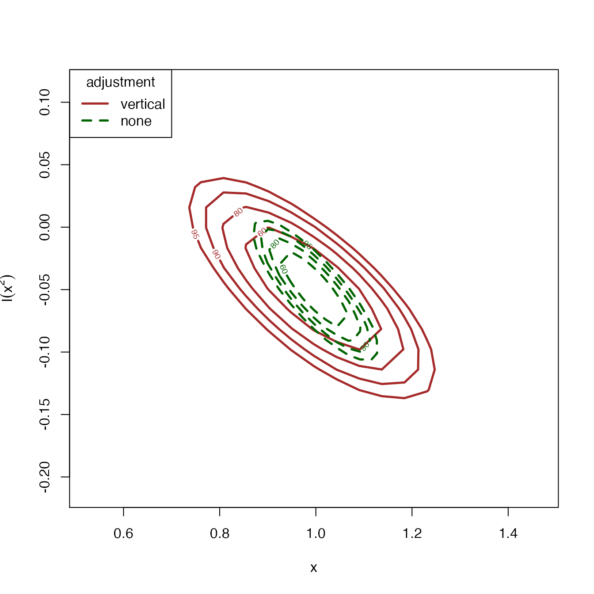
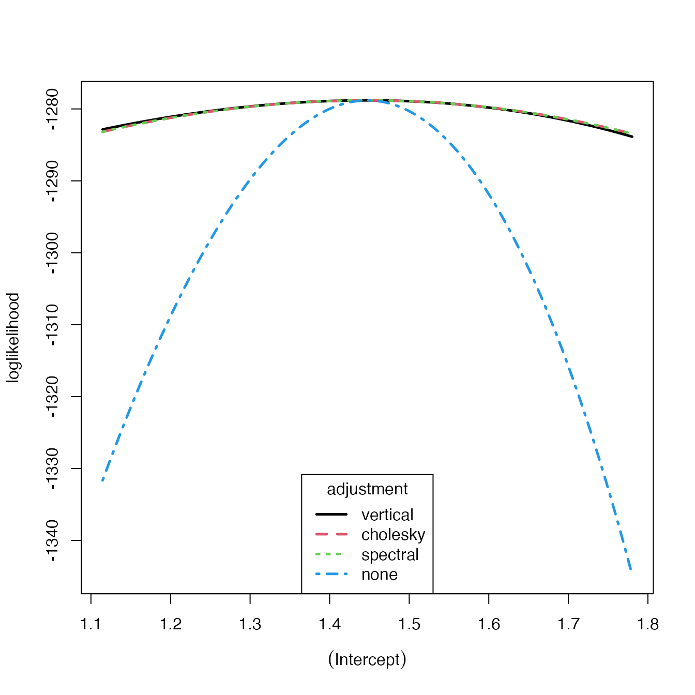

vignettes/chantrics-vignette.Rmd
chantrics-vignette.Rmdchantrics applies the Chandler-Bate loglikelihood adjustment (Chandler and Bate 2007) implemented in the chandwich package (Northrop and Chandler 2020) to different models frequently used in basic Econometrics applications. adj_loglik() is the central function of chantrics, it is a generic function adjusting the parameter covariance matrix of the models to incorporate clustered data, and can mitigate for model misspecification. The returned object can then be plugged into a range of model analysis functions, which will be described below. For an introduction on modelling with clustered data using chantrics, visit this vignette..
Note that not all functionality demonstrated below is available for all types of models.
In order to be able to demonstrate the range of functionality available, this example will be using the misspecified count data regression from Chapter 5.1 in the Object-Oriented Computation of Sandwich Estimators vignette from the sandwich package (Zeileis 2006).
First, data from a negative binomial model is generated, and then a Poisson model is fit, which is clearly misspecified.
set.seed(123)
x <- rnorm(250)
y <- rnbinom(250, mu = exp(1 + x), size = 1)
## Fit the Poisson glm model, which is not correctly specified
fm_pois <- glm(y~x +I(x^2), family = poisson)
lmtest::coeftest(fm_pois)
#>
#> z test of coefficients:
#>
#> Estimate Std. Error z value Pr(>|z|)
#> (Intercept) 1.063268 0.041357 25.7094 < 2e-16 ***
#> x 0.996072 0.053534 18.6062 < 2e-16 ***
#> I(x^2) -0.049124 0.023146 -2.1223 0.03381 *
#> ---
#> Signif. codes: 0 '***' 0.001 '**' 0.01 '*' 0.05 '.' 0.1 ' ' 1
# The I(x^2) term is spuriously significant.We can now use the model object fm_pois, and adjust it using adj_loglik(). Use coef() to get a vector of the coefficients, summary() to get an overview over the adjustment, or use lmtest::coeftest to see the results of \(z\) tests on each of the coefficients.
fm_pois_adj <- adj_loglik(fm_pois)
coef(fm_pois_adj) # class "numeric"
#> (Intercept) x I(x^2)
#> 1.06326821 0.99607219 -0.04912373
summary(fm_pois_adj)
#> MLE SE adj. SE
#> (Intercept) 1.06300 0.04136 0.084
#> x 0.99610 0.05353 0.105
#> I(x^2) -0.04912 0.02315 0.036
lmtest::coeftest(fm_pois_adj)
#>
#> z test of coefficients:
#>
#> Estimate Std. Error z value Pr(>|z|)
#> (Intercept) 1.063268 0.083776 12.6918 <2e-16 ***
#> x 0.996072 0.105217 9.4668 <2e-16 ***
#> I(x^2) -0.049124 0.036284 -1.3539 0.1758
#> ---
#> Signif. codes: 0 '***' 0.001 '**' 0.01 '*' 0.05 '.' 0.1 ' ' 1The function chandwich::conf_intervals() returns confidence intervals at the level specified in conf (default: 95). To use one of the other specifications of the adjustment from Chandler and Bate (2007), use the type argument. Many other adjustments are available. The classic S3 method confint() is also available.
chandwich::conf_intervals(fm_pois_adj)
#> Waiting for profiling to be done...
#> Model: poisson_glm_lm
#>
#> 95% confidence intervals, adjusted loglikelihod with type = ''vertical''
#>
#> Symmetric:
#> lower upper
#> (Intercept) 0.89907 1.22747
#> x 0.78985 1.20229
#> I(x^2) -0.12024 0.02199
#>
#> Profile likelihood-based:
#> lower upper
#> (Intercept) 0.8954 1.2232
#> x 0.7877 1.1991
#> I(x^2) -0.1198 0.0222
chandwich::conf_intervals(fm_pois_adj, type = "spectral", conf = 99)
#> Waiting for profiling to be done...
#> Model: poisson_glm_lm
#>
#> 99% confidence intervals, adjusted loglikelihod with type = ''spectral''
#>
#> Symmetric:
#> lower upper
#> (Intercept) 0.84748 1.27906
#> x 0.72505 1.26709
#> I(x^2) -0.14258 0.04434
#>
#> Profile likelihood-based:
#> lower upper
#> (Intercept) 0.84491 1.27554
#> x 0.73069 1.27167
#> I(x^2) -0.14497 0.04169
confint(fm_pois_adj)
#> Waiting for profiling to be done...
#> 2.5 % 97.5 %
#> (Intercept) 0.8954172 1.22323347
#> x 0.7876855 1.19906286
#> I(x^2) -0.1198278 0.02220215We can also plot confidence regions of the estimates for two coefficients using conf_region(), where we can specify the parameters using which_pars, the type of specification of the adjustment from Chandler and Bate (2007) using type, and the confidence levels using conf. Other adjustments are available.
fm_pois_adj_vert <- chandwich::conf_region(fm_pois_adj, which_pars = c("x", "I(x^2)"))
#> Waiting for profiling to be done...
fm_pois_adj_none <- chandwich::conf_region(fm_pois_adj, which_pars = c("x", "I(x^2)"), type = "none")
#> Waiting for profiling to be done...
plot(fm_pois_adj_vert, fm_pois_adj_none, conf = c(60, 80, 90, 95), col = c("brown", "darkgreen"), lty = c(1, 2), lwd = 2.5)
The methods * AIC() for the Akaike Information Criterion, * df.residual() for the degrees of freedom of the residuals * fitted() for the fitted values, * logLik() for the sum of the loglikelihoods and logLik_vec() for the loglikelihood contributions for each of the observations, and * vcov() for the variance-covariance matrix, are available.
The performance of the types of adjustments that are shown in Chandler and Bate (2007) can be seen using plot() if there is a single free parameter. Use type to specify the types of adjustment that should show in the plot.
fm_pois_smallest_adj <- update(fm_pois_small_adj, .~.-1)
plot(fm_pois_smallest_adj, type = 1:4, col = 1:4, legend_pos = "bottom", lwd = 2.5)
Note that for one free parameter, the Cholesky and the spectral adjustments are identical, and the vertical adjustment only deviates slightly at the edges of the plot.
Chandler, Richard, and Steven Bate. 2007. “Inference for Clustered Data Using the Independence Loglikelihood.” Biometrika 94 (1): 167–83. https://doi.org/doi:10.1093/biomet/asm015.
Northrop, Paul J., and Richard E. Chandler. 2020. Chandwich: Chandler-Bate Sandwich Loglikelihood Adjustment. https://CRAN.R-project.org/package=chandwich.
Zeileis, Achim. 2006. “Object-Oriented Computation of Sandwich Estimators.” Journal of Statistical Software, Articles 16 (9): 1–16. https://doi.org/10.18637/jss.v016.i09.